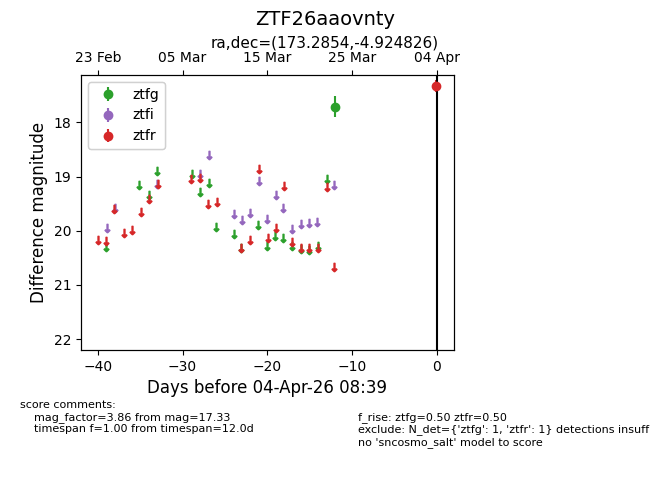
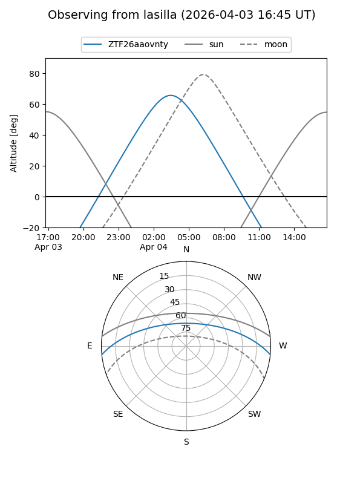
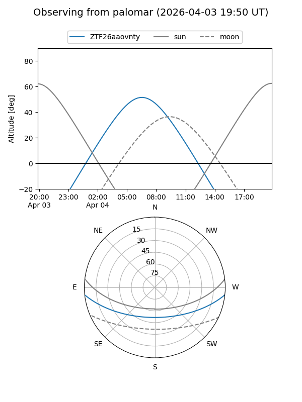

ZTF26aaovnty
Target ZTF26aaovnty at 2026-04-04 08:43
Aliases and brokers:
FINK: link
Lasair: link
ALeRCE: link
alt names
ZTF26aaovnty (ztf,fink_ztf)
Coordinates:
equatorial (ra, dec) = 173.2854,-4.92483
equatorial (HMS+DMS) = 11:33:08.49,-04:55:29.37
galactic (l, b) = (269.4398,+52.77948)
Flags:
Photometry:
last ztfg=17.71, ztfr=17.33
1 ztfg, 1 ztfr detections
Lightcurve

Visibility


Additional plots